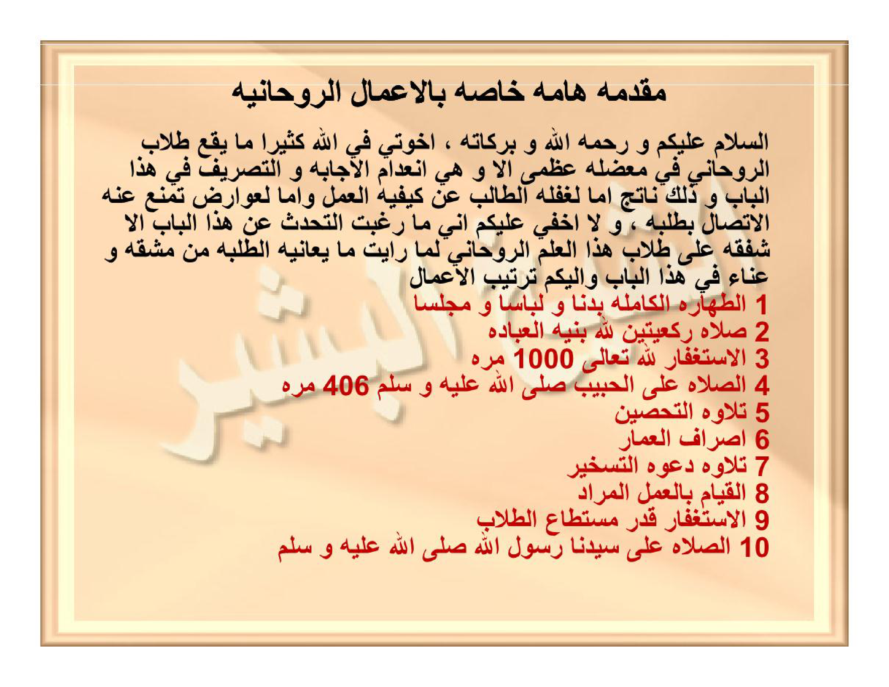

HALAMAN 33 — MUQADDIMATUN HĀMMATUN KHĀSHSHATUN BIL-A'MĀLIR-RŪHĀNIYYATI — مُقَدِّمَةٌ هَامَّةٌ خَاصَّةٌ بِالْأَعْمَالِ الرُّوحَانِيَّةِ
arab
مُقَدِّمَةٌ هَامَّةٌ خَاصَّةٌ بِالْأَعْمَالِ الرُّوحَانِيَّةِ
السَّلَامُ عَلَيْكُمْ وَرَحْمَةُ اللهِ وَبَرَكَاتُهُ ، إِخْوَتِي فِي اللهِ كَثِيرًا مَا يَقَعُ طُلَّابُ الرُّوحَانِيِّ فِي مُعْضِلَةٍ عُظْمَى أَلَا وَهِيَ انْعِدَامُ الْإِجَابَةِ وَالتَّصْرِيفِ فِي هَذَا الْبَابِ وَذَلِكَ نَاتِجٌ إِمَّا لِغَفْلَةِ الطَّالِبِ عَنْ كَيْفِيَّةِ الْعَمَلِ وَإِمَّا لِعَوَارِضَ تَمْنَعُ عَنْهُ الِاتِّصَالَ بِطَلَبِهِ ، وَلَا أُخْفِي عَلَيْكُمْ أَنِّي مَا رَغِبْتُ التَّحَدُّثَ عَنْ هَذَا الْبَابِ إِلَّا شَفَقَةً عَلَى طُلَّابِ هَذَا الْعِلْمِ الرُّوحَانِيِّ لِمَا رَأَيْتُ مَا يُعَانِيهِ الطَّلَبَةُ مِنْ مَشَقَّةٍ وَعَنَاءٍ فِي هَذَا الْبَابِ وَإِلَيْكُمْ تَرْتِيبُ الْأَعْمَالِ
١ الطَّهَارَةُ الْكَامِلَةُ بَدَنًا وَلِبَاسًا وَمَجْلِسًا
٢ صَلَاةُ رَكْعَتَيْنِ لِلَّهِ بِنِيَّةِ الْعِبَادَةِ
٣ الِاسْتِغْفَارُ لِلَّهِ تَعَالَى ١٠٠٠ مَرَّةٍ
٤ الصَّلَاةُ عَلَى الْحَبِيبِ صَلَّى اللهُ عَلَيْهِ وَسَلَّمَ ٤٠٦ مَرَّةً
٥ تِلَاوَةُ التَّحْصِينِ
٦ إِصْرَافُ الْعُمَّارِ
٧ تِلَاوَةُ دَعْوَةِ التَّسْخِيرِ
٨ الْقِيَامُ بِالْعَمَلِ الْمُرَادِ
٩ الِاسْتِغْفَارُ قَدْرَ مُسْتَطَاعِ الطُّلَّابِ
١٠ الصَّلَاةُ عَلَى سَيِّدِنَا رَسُولِ اللهِ صَلَّى اللهُ عَلَيْهِ وَسَلَّمَ
latin
Muqaddimatun hāmmatun khāshshatun bil-a'mālir-rūhāniyyati.
As-salāmu 'alaikum wa rahmatullāhi wa barakātuhū, ikhwatī fillāhi katsīran mā yaqa'u thullābur-rūhāniyyi fī mu'dhilatin 'uzhmā alā wa hiyan-'idāmul-ijābati wat-tashrīfi fī hādzal-bābi wa dzālika nātijun immā lighaflatith-thālibi 'an kaifiyyatil-'amali wa immā li'awāridha tamna'u 'anhul-ittishāla bithalabihī, wa lā ukhfī 'alaikum annī mā raghibtut-tahaddutsa 'an hādzal-bābi illā syafaqatan 'alā thullābi hādzal-'ilmir-rūhāniyyi limā ra'aitu mā yu'ānīhith-thalabatu min masyaqqatin wa 'anā'in fī hādzal-bābi wa ilaikum tartībul-a'māli:
1. Ath-thahāratul-kāmilatu badanan wa libāsan wa majlisan
2. Shalātu rak'ataini lillāhi biniyyatil-'ibādati
3. Al-istighfāru lillāhi ta'ālā 1000 marratin
4. Ash-shalātu 'alal-habībi shallallāhu 'alaihi wa sallama 406 marratan
5. Tilāwatut-tahshīni
6. Ishrāful-'ummāri
7. Tilāwatu da'watit-taskhīri
8. Al-qiyāmu bil-'amalil-murādi
9. Al-istighfāru qadra mustathā'ith-thullābi
10. Ash-shalātu 'alā sayyidinā Rasūlillāhi shallallāhu 'alaihi wa sallama
Terjemahan
Mukadimah penting yang khusus berkaitan dengan amalan-amalan ruhani.
Assalamu'alaikum warahmatullahi wabarakatuh. Wahai saudara-saudaraku karena Allah, sering kali para penuntut ilmu ruhani terjatuh ke dalam permasalahan yang sangat besar, yaitu tidak adanya pengabulan (ijābah) dan daya guna (tashrīf) dalam bab ini. Hal itu disebabkan adakalanya karena kelalaian sang penuntut ilmu dari tata cara pengamalan yang benar, dan adakalanya karena berbagai penghalang ('awāridh) yang menghalanginya untuk terhubung dengan hajat yang dicarinya. Dan tidak aku sembunyikan dari kalian bahwa aku tidak terdorong untuk membicarakan bab ini melainkan karena rasa kasih sayang (iba) terhadap para penuntut ilmu ruhani ini, karena aku melihat beratnya kesulitan dan kepayahan yang dialami para penuntut ilmu dalam bab ini. Dan inilah untuk kalian urutan tata tertib amalan:
1. Kesucian yang sempurna pada badan, pakaian, dan tempat duduk (majelis)
2. Shalat dua rakaat karena Allah dengan niat ibadah
3. Membaca istighfar kepada Allah Ta'ala 1000 kali
4. Membaca shalawat atas al-Habib shallallahu 'alaihi wa sallam 406 kali
5. Membaca Tahshīn (benteng penjagaan diri)
6. Melakukan Ishrāful-'Ummār (pemindahan penghuni halus tempat)
7. Membaca Doa Taskhīr (penundukan)
8. Melaksanakan amalan yang dimaksud (yang dituju)
9. Membaca istighfar seukuran kemampuan para penuntut ilmu
10. Membaca shalawat atas junjungan kita Rasulullah shallallahu 'alaihi wa sallam
Syarah dan Penjelasan
1. **Verifikasi 3× vs `hal_33.png` (Koreksi Lafaz & Transliterasi)**:
- **Poin 7 (`تِلَاوَةُ دَعْوَةِ التَّسْخِيرِ`)**: Pada draf tertulis *Tilāwatu da'watit-tasghīri* (dengan *gh*), padahal di kitab asli tertulis **`التَّسْخِيرِ`** (*Tilāwatu da'watit-taskhīri* dengan huruf *kh* = Doa Penundukan yang akan dijabarkan pada halaman selanjutnya).
- **Poin 9 (`قَدْرَ مُسْتَطَاعِ الطُّلَّابِ`)**: Pada scan asli tertulis bentuk jamak `الطُّلَّابِ` (*ath-thullābi*), bukan bentuk tunggal *ath-thālibi*.
- **Kaidah Huruf `ظ` (`zh`), `ص` (`sh`), dan `ش` (`sy`)**: Kata `عُظْمَى` ditulis *'uzhmā* (`zh`), `وَالتَّصْرِيفِ` ditulis *wat-tashrīfi* (`sh`), `التَّحْصِينِ` ditulis *at-tahshīni* (`sh`), dan `مُعْضِلَةٍ` dibaca *mu'dhilatin* (dengan dhammah mim sebagai *isim fā'il* dari *a'dhala*, bukan *ma'dhilatin*).
2. **Dua Penyebab Kegagalan Amalan (`In'idāmul-Ijābah wat-Tashrīf`)**:
- Syeikh al-Basyir mendiagnosis secara tajam mengapa banyak pengamal kitab hikmah gagal memperoleh hasil:
1) **Faktor Metodologis (`Ghaflatuth-Thālib 'an Kaifiyyatil-'Amal`)**: Pengamal langsung membaca *'azīmah* atau menulis *wafaq* tanpa menjalankan urutan pembuka dan penutup yang baku.
2) **Faktor Gangguan Ruhani (`'Awāridh`)**: Adanya penghalang pada diri pengamal atau tempat amalan yang memutus hubungan batin (*al-ittishāl*) dengan hajatnya.
3. **Rahasia Bilangan Istighfar 1000× & Shalawat 406×**:
- **Istighfar 1000×** adalah bilangan *kulliyyah* (kesempurnaan pembersihan) untuk menggugurkan karat dosa yang menghalangi *ijābah*.
- **Shalawat 406×**: Dalam disiplin hisab Abjad (*Jumal Kabīr*), angka **406** adalah nilai huruf **`ت`** (*Tā'* = 400) + **`و`** (6) yang mengisyaratkan *Taubah* dan *Tawajjuh*, serta nilai kalimat-kalimat pembuka nurani yang menyambungkan ruh pengamal dengan syafaat Rasulullah ﷺ.
Khususiyah dan Tatacara Praktik
1. **Sepuluh Rukun Baku (*Tartībul-A'māl*) Sebelum Setiap Amalan Ruhani**:
- Sepuluh urutan pada Halaman 33 ini merupakan **Fondasi Wajib (SOP Utama)** bagi seluruh amalan di dalam kitab *Anwārul-Mujarrabāt* (baik ketika menulis wafaq pada Bagian Pertama maupun ketika mengamalkan *Da'wah* pada Bagian Kedua).
- Ketika pada Halaman 29 pengarang menulis *"melaksanakan apa yang telah aku sebutkan pada faedah amalan-amalan ruhani yang mendahului setiap amalan ruhani"*, maka yang dimaksud adalah ke-10 langkah ini.
2. **Urutan Penjagaan Diri yang Tidak Boleh Terbalik (Poin 5, 6, 7)**:
- Perhatikan bahwa **Poin 5 (`تِلَاوَةُ التَّحْصِينِ` — membaca benteng diri)** wajib dilakukan **sebelum** **Poin 6 (`إِصْرَافُ الْعُمَّارِ` — memindahkan jin penghuni tempat)** dan **Poin 7 (`تِلَاوَةُ دَعْوَةِ التَّسْخِيرِ`)**. Membentengi diri terlebih dahulu sebelum melakukan *ishrāf* menjamin pengamal sepenuhnya terlindung saat berinteraksi dengan dimensi ruhani.

[Scan Lengkap: HALAMAN 33 — MUQADDIMATUN HĀMMATUN KHĀSHSHATUN BIL-A'MĀLIR-RŪHĀNIYYATI — مُقَدِّمَةٌ هَامَّةٌ خَاصَّةٌ بِالْأَعْمَالِ الرُّوحَانِيَّةِ]